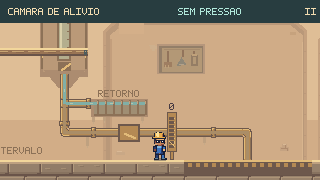
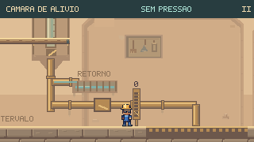

Água, pressão
e mecanismos.
Rodada seguinte: Pontes, roldanas, comportas e irrigação do canal final.
A água percorre os tubos e suas curvas em um fluxo contínuo. O seletor acompanha a troca de ramal; abrir o alívio leva a água ao retorno e corta a alimentação da grelha.


ANTESDEPOISA água chega ao retorno pela mesma altura do tubo, passa por trás da grade e deixa a alimentação da grelha sem fluxo. A abertura real da tampa determina esse estado.
Tubulação fixa, haste móvel
As descidas dos ramais passam pela lateral dos pistões e entram no solo junto às bases. A tubulação permanece no lugar enquanto as hastes acompanham as plataformas.
Uma troca que se pode acompanhar
O seletor desliza durante o aviso de desvio. A letra e a água continuam indicando o ramal abastecido até a troca acontecer.
Acompanhe o caminho da água
As animações usam o tempo da simulação: acompanham pausas e interrupções de impacto. Com movimento reduzido, os reflexos ficam estáticos e os mecanismos continuam mostrando seu estado real.
Examinar a Câmara de Alívio · Examinar o Pátio


O mecanismo durante a travessia
Entradas de teclado gravadas, com física e câmera nativas. Simulação a 60 Hz, captura a 15 quadros por segundo. Na abertura durante a descarga, o jato tinha 107 pixels de altura: a quebra real da tampa retirou o perigo e ativou o retorno.
Aviso contínuo de pressão
Corrigido o instante em que o aviso podia mostrar “seco” no primeiro quadro de subida do jato. O sinal de atenção permanece até a água aparecer.
Água perigosa bem delimitada
O jato mantém sua cobertura completa de colisão. A água dentro dos tubos usa tons suaves; gotas residuais após o fechamento continuam sendo inofensivas.
Conferência desta rodada
893 testes de Guaíra e build aprovados. Sete percursos completos sem dano, incluindo as duas alternativas da Câmara de Alívio e a abertura durante uma descarga. Também foram conferidos 56 enquadramentos gerais e seis comparações de detalhe.
As oito fases passaram por entrada, teclado, pausa e retorno ao mapa no navegador. A pausa foi conferida com água em plena descarga nos Respiros e na Câmara de Alívio.
Comparações e percursos de alívio · Cenários e demais percursos · Conferência no navegador · Registro técnico